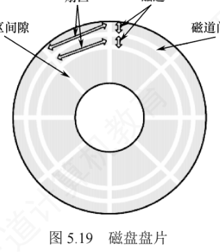
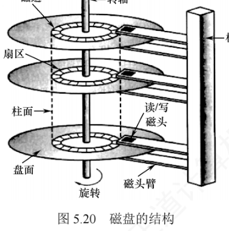
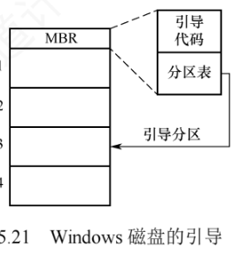
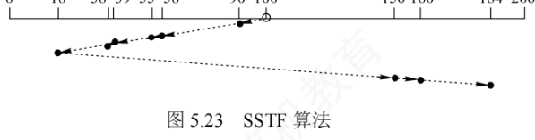
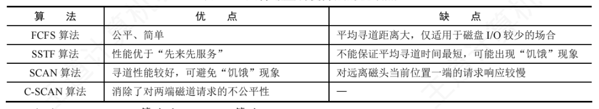
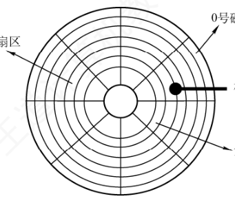
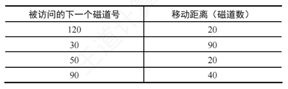
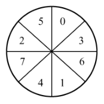
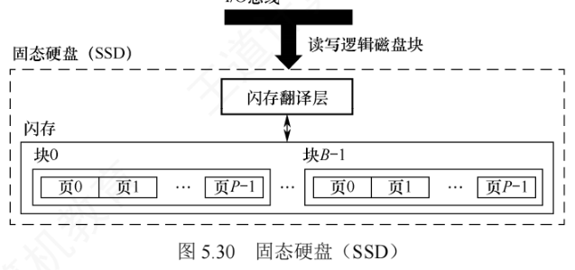

5.3 磁盘和固态硬盘
文件的最终归宿是外存，而外存的主体是磁盘。学习本节前，请先带着两个问题：
- 磁盘一次读/写操作包含哪几部分时间？其中哪部分最长？
- 存储文件时，若一个磁道容纳不下，剩余数据应存放在同一盘面的不同磁道，还是同一柱面的不同盘面？
本节要求重点掌握两类计算：计算一次磁盘读/写操作所花的时间；对给定的磁道访问序列，按特定调度算法求出磁头移动的总磁道数与平均寻道长度。本节与《计算机组成原理考研复习指导》3.4 节联系密切，建议结合复习。
5.3.1 磁盘
磁盘（Disk）是由表面涂有磁性物质的盘片构成的存储设备，通过磁头（一个导体线圈）读/写数据。读/写期间盘片高速旋转，磁头沿盘片径向移动以定位目标位置。
1. 磁道、扇区与柱面
盘面上的数据存储在一组同心圆中，称为磁道。每个磁道的宽度与磁头相当，一个盘面包含上千个磁道。每个磁道又划分为数百个扇区，扇区具有固定大小（如 1KB），是磁盘寻址的最小物理单位。相邻磁道及扇区间都留有间隙，以避免读/写干扰。传统设计中每个磁道的扇区数相同，由于外道周长更大，其线性存储密度反而低于内道，因此磁盘的存储能力受限于最内道的最大存储密度。

多个盘片垂直堆叠形成盘组，每个盘面对应一个磁头，所有磁头安装在同一磁头臂上、同步沿径向移动。所有盘面上半径相同的磁道构成一个柱面。

磁盘地址用「柱面号·盘面号·扇区号」表示；磁盘的总存储容量由柱面数、盘面数和每磁道扇区数共同决定：
$$\text{磁盘容量} = \text{柱面数} \times \text{盘面数} \times \text{每磁道扇区数} \times \text{每扇区字节数}$$2. 读/写磁盘数据块的过程
- 根据柱面号移动磁头臂，使磁头定位到目标柱面（这一步对应后文的寻道时间）；
- 激活对应盘面的磁头（电子选头动作，几乎不耗时）；
- 等待目标扇区随盘片旋转至磁头下方，完成读/写操作（这一步对应旋转延迟）。
3. 磁盘的类型
- 固定头磁盘：每个磁道配备一个磁头，磁头位置固定；
- 活动头磁盘：磁头可沿径向移动，通过磁头臂定位到目标磁道；
- 固定盘磁盘：盘片永久密封在驱动器内，不可拆卸；
- 可换盘磁盘：盘片允许拆卸和更换。
最早的磁盘由 IBM 公司于 1973 年推出，称为温彻斯特磁盘（温盘），采用活动磁头与固定盘片结构，是现代机械硬盘的雏形。
在操作系统中，每类资源的管理都涉及调度算法。用户访问文件时，操作系统要先完成权限检查、逻辑地址到物理地址的转换等步骤，最终把请求转化为对磁盘的读/写操作；当多个 I/O 请求同时到达时，系统必须决定服务顺序——这正是磁盘调度算法要解决的核心问题。
5.3.2 磁盘的管理
1. 磁盘初始化
一块新磁盘只是涂有磁性材料的空白盘，在能够存储数据之前必须把它划分为扇区，以便磁盘控制器进行读/写——这个过程称为低级格式化（物理格式化）。每个扇区通常由头部、数据区域和尾部组成：头部和尾部存放磁盘控制器使用的相关信息，其中利用磁道号、磁头号和扇区号来标志一个扇区，利用 CRC 字段对扇区进行校验。
大多数磁盘出厂时已完成低级格式化，这使制造商能够测试磁盘，并建立逻辑块地址到物理扇区的初始映射；许多磁盘的控制器还可在低级格式化时指定扇区中数据区域的大小，通常为 256 字节、512 字节或 4KB 等。
2. 分区
在使用磁盘存储文件之前，还要完成两个步骤。第一步是分区：把磁盘划分为若干逻辑区域（如常见的 C 盘、D 盘），每个分区的起始位置和大小记录在主引导记录（MBR）的分区表中。第二步是对分区进行逻辑格式化（高级格式化），即在分区上建立文件系统：初始化根目录、创建用于管理空闲与已分配空间的数据结构，并将初始目录置为空。
由于扇区单位太小，为提高 I/O 效率，操作系统把多个连续扇区组合成一簇（在文件系统中也称块）。为简化管理，通常把一簇分配给单个文件，因此文件占用的空间是簇的整数倍——即使文件不足一簇（甚至是 0 字节），也要占用一整簇空间。
3. 引导块
计算机启动时需要运行一个初始化程序（自举程序），用于初始化 CPU、寄存器、设备控制器和内存等，随后加载并启动操作系统：自举程序要定位磁盘上的操作系统内核，把它载入内存并跳转到入口地址，开始操作系统的执行。
自举程序通常存放在 ROM 中。为避免「修改自举代码就要更换 ROM 硬件」，一般只在 ROM 中保留一个小型自举装入程序，而把功能完整的引导程序存放在磁盘固定位置的引导块中。含有引导块的磁盘称为启动磁盘（系统磁盘）。ROM 中的代码指示磁盘控制器把引导块读入内存并执行，后者再从指定位置加载操作系统内核并启动。
以 Windows 为例：磁盘可划分为多个分区，其中活动分区（引导分区）包含操作系统核心文件；初始引导代码存放在磁盘的 0 号扇区，称为主引导记录（MBR）。启动时，ROM 中的代码首先读取 MBR——除引导代码外，MBR 还包含分区表和一个标志位，用于指明应从哪个分区引导；随后系统读取该分区的首扇区（引导扇区），继续完成加载系统服务与驱动程序等后续引导步骤。

4. 坏块
磁盘含有机械部件且容错能力较弱，容易出现一个或多个扇区损坏，部分坏块甚至在出厂时就已存在。根据磁盘类型和控制器能力，坏块的处理方式有所不同：
- 简单磁盘（如采用 IDE 控制器的磁盘）：坏块由操作系统在逻辑格式化时检测。例如 MS-DOS 的 Format 命令会识别坏扇区，并在 FAT 表中标记为不可用，避免程序使用。
- 现代复杂磁盘：控制器内部维护一份坏块列表，出厂低级格式化时初始化、使用过程中动态更新；低级格式化会预留一部分对操作系统透明的备用扇区，发现坏块时控制器自动把它映射到备用扇区，实现逻辑替换——这种机制称为扇区备用。
坏块处理的核心思想是：通过软件标记或硬件重映射，确保系统不会使用坏块。
5.3.3 磁盘调度算法
1. 磁盘的存取时间
一次磁盘读/写操作的时间由寻道时间、旋转延迟时间和数据传输时间三部分组成。
1）寻道时间 \(T_s\)。活动头磁盘在读/写数据前，把磁头移动到目标磁道所需的时间，包括磁头臂的启动时间 \(s\) 和跨越 \(n\) 条磁道的移动时间：
$$T_s = m \times n + s$$式中 \(m\) 是跨越每条磁道所需的时间，约为 0.2ms；磁头臂的启动时间 \(s\) 约为 2ms。
2）旋转延迟时间 \(T_r\)。目标扇区旋转到磁头下方所需的平均等待时间。由于目标扇区位置随机，平均等于半圈的旋转时间。设磁盘转速为 \(r\)（单位：转/秒），则
$$T_r = \frac{1}{2r}$$典型转速 5400 转/分的磁盘，旋转一圈需 \(60\,\text{s} \div 5400 \approx 11.1\,\text{ms}\)，对应 \(T_r \approx 5.56\,\text{ms}\)。又如 7200 转/分的硬盘：转一圈需 \(60/7200\,\text{s} \approx 8.33\,\text{ms}\)，平均旋转延迟 \(\dfrac{60}{2 \times 7200}\,\text{s} \approx 4.17\,\text{ms}\)。注意先统一单位再计算：转/分化为转/秒后再取半圈。
3）数据传输时间 \(T_t\)。读取或写入 \(b\) 字节数据所需的时间。若每条磁道存储 \(N\) 字节，则
$$T_t = \frac{b}{rN}$$式中 \(r\) 为磁盘每秒转数。总平均存取时间 \(T_a\) 可表示为：
$$T_a = T_s + \frac{1}{2r} + \frac{b}{rN}$$在磁盘存取时间中，寻道时间占主导地位，且直接受磁盘调度算法影响；旋转延迟时间和数据传输时间都与磁盘转速成反比，因此转速是磁盘性能非常重要的硬件参数，但难以从操作系统层面优化。所以，磁盘调度的主要目标是减少磁盘的平均寻道时间。
2. 磁盘调度算法
下面用一道贯穿全节的例题演示各种算法（2010、2018 统考考查各种磁盘调度算法的比较）：假设磁盘请求队列为 55,58,39,18,90,160,150,38,184，磁头初始位于 100 号磁道，磁道号范围 0～200。
（1）先来先服务（FCFS）算法
FCFS 按进程请求访问磁盘的先后顺序进行调度，是最简单的调度算法。优点是公平、简单；当请求较少且访问的扇区在物理位置上较聚集时，性能尚可；但当大量进程竞争磁盘时，磁头频繁长距离移动，导致效率低下，因此实际系统通常采用更高效的调度算法。
| 顺序 | 磁头移动轨迹 | 移动距离（磁道数） |
|---|---|---|
| 1 | 100 → 55 | 45 |
| 2 | 55 → 58 | 3 |
| 3 | 58 → 39 | 19 |
| 4 | 39 → 18 | 21 |
| 5 | 18 → 90 | 72 |
| 6 | 90 → 160 | 70 |
| 7 | 160 → 150 | 10 |
| 8 | 150 → 38 | 112 |
| 9 | 38 → 184 | 146 |
| 合计 | 45+3+19+21+72+70+10+112+146 = 498 | |
总移动距离为 498 个磁道，平均寻道长度 = 498 ÷ 9 ≈ 55.3（磁道）。
（2）最短寻道时间优先（SSTF）算法
SSTF 每次选择距离当前磁头位置最近的请求进行调度，使单次寻道时间最短。该策略并不能保证平均寻道时间最小，但通常优于 FCFS。SSTF 可能产生「饥饿」现象：若磁头位于 18 号磁道附近且附近持续出现新请求，磁头就会长期在局部来回移动，较远磁道（如 184 号）长时间得不到服务。

| 顺序 | 磁头移动轨迹 | 移动距离（磁道数） |
|---|---|---|
| 1 | 100 → 90 | 10 |
| 2 | 90 → 58 | 32 |
| 3 | 58 → 55 | 3 |
| 4 | 55 → 39 | 16 |
| 5 | 39 → 38 | 1 |
| 6 | 38 → 18 | 20 |
| 7 | 18 → 150 | 132 |
| 8 | 150 → 160 | 10 |
| 9 | 160 → 184 | 24 |
| 合计 | 10+32+3+16+1+20+132+10+24 = 248 | |
总移动距离为 248 个磁道，平均寻道长度 = 248 ÷ 9 ≈ 27.5（磁道）。
（3）扫描（SCAN）算法
SSTF 因磁头在局部区域来回移动而可能饥饿。为解决该问题，SCAN 规定：磁头只有到达最外侧磁道后才能向内移动，到达最内侧磁道后才能向外移动——即在 SSTF 的基础上增加了磁头移动方向的约束。其行为类似电梯运行，故也称电梯调度算法。但 SCAN 对最近扫描过的区域不公平，在访问局部性方面不如 FCFS 和 SSTF。
对上例采用 SCAN（磁头沿磁道号增大的方向移动），访问顺序为 100,150,160,184,200,90,58,55,39,38,18。注意：磁头要先移动到最外侧的 200 号磁道才折返，而不是停在最大请求 184 号。
| 顺序 | 磁头移动轨迹 | 移动距离（磁道数） |
|---|---|---|
| 1 | 100 → 150 | 50 |
| 2 | 150 → 160 | 10 |
| 3 | 160 → 184 | 24 |
| 4 | 184 → 200 | 16 |
| 5 | 200 → 90 | 110 |
| 6 | 90 → 58 | 32 |
| 7 | 58 → 55 | 3 |
| 8 | 55 → 39 | 16 |
| 9 | 39 → 38 | 1 |
| 10 | 38 → 18 | 20 |
| 合计 | 50+10+24+16+110+32+3+16+1+20 = 282 | |
总移动距离为 282 个磁道，平均寻道长度 = 282 ÷ 9 ≈ 31.33（磁道）。
（4）循环扫描（C-SCAN）算法
C-SCAN 在 SCAN 的基础上规定：磁头仅沿单一方向移动并提供服务，返回时快速移至起始端且不处理任何请求。SCAN 倾向于优先服务靠近最内侧或最外侧磁道的请求，使中间区域的响应延迟较大；C-SCAN 把回扫过程变成非服务性的快速跳转，以循环方式均匀处理所有请求，从而消除这种对两端磁道请求的不公平性。
对上例采用 C-SCAN（磁头沿磁道号增大的方向移动），访问顺序为 100,150,160,184,200,0,18,38,39,55,58,90；从 200 快速回扫到 0 的过程不服务任何请求，但按教材口径其移动距离计入总数。
| 顺序 | 磁头移动轨迹 | 移动距离（磁道数） |
|---|---|---|
| 1 | 100 → 150 | 50 |
| 2 | 150 → 160 | 10 |
| 3 | 160 → 184 | 24 |
| 4 | 184 → 200 | 16 |
| 5 | 200 → 0（快速回扫） | 200 |
| 6 | 0 → 18 | 18 |
| 7 | 18 → 38 | 20 |
| 8 | 38 → 39 | 1 |
| 9 | 39 → 55 | 16 |
| 10 | 55 → 58 | 3 |
| 11 | 58 → 90 | 32 |
| 合计 | 50+10+24+16+200+18+20+1+16+3+32 = 390 | |
总移动距离为 390 个磁道，平均寻道长度 = 390 ÷ 9 ≈ 43.33（磁道）。
（5）LOOK 调度与 C-LOOK 调度
采用 SCAN 和 C-SCAN 时，磁头总是严格地从磁盘一端移动到另一端。实际上可进一步改进：磁头只需移动到当前方向上最远的请求位置即可返回，无须抵达物理端点——改进后的算法分别称为 LOOK 调度和 C-LOOK 调度，因为磁头在朝某方向移动前会先「查看」（look）该方向是否还有待处理请求。若无特别说明，实际系统中所称的 SCAN、C-SCAN 算法通常就是指 LOOK、C-LOOK 调度。
LOOK：访问顺序 100→150→160→184→90→58→55→39→38→18，移动距离 = (184−100) + (184−18) = 84 + 166 = 250 个磁道，平均寻道长度 ≈ 27.8；
C-LOOK：访问顺序 100→150→160→184→18→38→39→55→58→90，移动距离 = 84 + (184−18) + (90−18) = 322 个磁道，平均寻道长度 ≈ 35.8。
对比 SCAN 的 282 与 C-SCAN 的 390，可见 LOOK 系算法省去了「越过最大请求到达物理端点」的无用功。
四种调度算法对比

| 算法 | 核心规则 | 优点 | 缺点 |
|---|---|---|---|
| FCFS | 按请求到达的先后顺序服务 | 公平、简单 | 平均寻道距离大，仅适用于磁盘 I/O 较少的场合 |
| SSTF | 每次选择距当前磁头最近的请求 | 性能优于「先来先服务」 | 不能保证平均寻道时间最短，可能出现「饥饿」现象 |
| SCAN | 沿一个方向扫到磁盘端点才能折返，途中顺路服务 | 寻道性能较好，可避免「饥饿」现象 | 对远离磁头当前位置一端的请求响应较慢 |
| C-SCAN | 单向扫描服务，回程快速跳转不服务 | 消除了对两端磁道请求的不公平性 | — |
| LOOK | SCAN 的改进：到当前方向最远的请求处即折返 | 省去到达物理端点的多余移动 | 仍是双向扫描，对两端请求的响应仍不如 C-SCAN 均匀 |
| C-LOOK | C-SCAN 的改进：单向扫描到最远请求处即快速回返 | 兼顾单向公平与更少的空跑距离 | — |
（6）NStepSCAN 算法和 FSCAN 算法
SSTF、SCAN 和 C-SCAN 在特定情况下可能出现磁臂黏着现象：一个或多个进程频繁地对某磁道发出 I/O 请求时，磁头会长期滞留于该区域，其他进程难以获得服务。
NStepSCAN 算法把磁盘请求队列划分为若干长度为 \(N\) 的子队列：调度器按 FCFS 原则依次处理各子队列，处理每个子队列内部时采用 SCAN 算法；处理某个子队列期间新到达的请求被放入尚未处理的其他子队列，不插入当前正在服务的子队列。这种「截流」机制避免了磁头因局部热点请求而长期滞留，进而避免磁臂黏着。算法性能随 \(N\) 变化：\(N\) 较大时趋近于 SCAN 算法；\(N=1\) 时每个子队列只有一个请求，退化为 FCFS 算法。
FSCAN 算法是 NStepSCAN 的简化形式，把请求队列固定划分为两个子队列：①当前服务队列——调度开始时已存在的所有请求，按 SCAN 算法处理；②新请求队列——扫描过程中新到达的请求全部暂存于此，推迟到下一轮扫描处理。通过「冻结当前、延后新请求」的策略，FSCAN 既保留了 SCAN 的特性，又避免了磁臂黏着，且实现简单、开销低。
综合例题：位示图管理空闲块 + C-SCAN 调度 + 存取时间
下面用一道统考真题（2010）把本小节的知识串起来。计算机系统采用 C-SCAN（循环扫描）磁盘调度策略，使用 2KB 内存空间记录 16384 个磁盘块的空闲状态。

1）磁盘块空闲状态的管理。用位示图（位图）表示：每一位对应一个磁盘块的空闲状态。共需位数 = 磁盘块数 = 16384 位，按 32 位字存储：
16384 位 ÷ 32 位/字 = 512 个字
512 字 × 4 B/字 = 2048 B = 2 KB恰好放进系统提供的 2KB 内存中。
2）读取 4 个随机分布扇区所需的总时间。单面磁盘转速 6000 转/分，每磁道 100 个扇区，相邻磁道间平均移动时间 1ms。某时刻磁头位于 100 号磁道、沿磁道号增大方向移动，请求队列为 50,90,30,120，每个磁道读取 1 个随机分布的扇区。C-SCAN 的访问顺序与移动距离如下：
| 被访问的下一个磁道号 | 移动距离（磁道数） |
|---|---|
| 120 | 20（100→120） |
| 30 | 90（120 快速回返至 30） |
| 50 | 20（30→50） |
| 90 | 40（50→90） |
| 合计 | 20+90+20+40 = 170 |

三部分时间逐步计算：
- 寻道时间：移动 170 个磁道 × 1ms/磁道 = 170ms；
- 旋转延迟：6000 转/分 = 100 转/秒，转一圈 10ms，平均旋转延迟 = 10ms ÷ 2 = 5ms，4 个随机分布的扇区共 4 × 5ms = 20ms；
- 传输时间：每磁道 100 个扇区，读一个扇区 = 10ms ÷ 100 = 0.1ms，4 个共 0.4ms。
总时间 = 170 + 20 + 0.4 = 190.4ms。
3）若把磁盘换成随机访问的 Flash 半导体存储器（如 U 盘、固态硬盘），则有比 C-SCAN 更高效的策略——直接用先来先服务（FCFS）：Flash 无机械部件，不存在寻道时间和旋转延迟，无须优化磁头移动轨迹，按请求先后顺序服务即可。
3. 减少延迟时间的方法
除减少寻道时间外，减少旋转延迟时间也是提高磁盘 I/O 效率的重要途径。磁盘是连续旋转的设备：磁头读出一个扇区后，系统需要一定时间处理数据，才能开始读下一个扇区。若逻辑上相邻的块在物理上也相邻，那么处理当前扇区期间，下一个目标扇区可能已经随盘片旋转掠过了磁头；等处理完毕，该扇区已不可访问，只能再等近一整圈才能轮到它，造成显著延迟。针对这一问题有两种布局优化手段。
（1）交替编号（单盘面内）
对单个盘面的扇区采用交替（交叉）编号：假设盘面有 8 个扇区，让逻辑相邻的块在物理布局上保持适当间隔，确保处理完一个扇区后，下一个目标扇区恰好（或即将）旋转到磁头下方，从而避免「错过一整圈」的长延迟。

① 顺序存放：读出并处理记录 A 需 3+2 = 5ms，此时磁头已转到记录 B 的中间，必须再转接近一圈才能读 B；前 8 条记录每条都要「等待近一圈 + 读取」，最后一条读完加处理即可。总时间 = 8 × (27 + 3) + (3 + 2) = 245ms。
② 交替存放（隔一个盘块放下一条记录）：每条记录耗时 = 3（读出）+ 2（处理）+ 1（等待）= 6ms。总时间 = 6 × 8 + (3 + 2) = 53ms。可见合理的扇区编号能把时间缩短近 5 倍。
（2）错位命名（盘面之间）
磁盘的所有盘面同步旋转，同一柱面内的块通常按盘面顺序连续存放：盘面 0 扇区 0、盘面 0 扇区 1、…、盘面 0 扇区 7、盘面 1 扇区 0、…。若要读取不同盘面上的连续块，例如读完盘面 0 扇区 7 后，系统仍需一段处理时间，而期间盘面持续旋转，下一个目标块（盘面 1 扇区 0）可能已被磁头错过，只能等它下次转回来。为此，可对不同盘面实施错位命名（假设有 2 个盘面且已采用交替编号）：让处理完盘面 0 扇区 7 后，盘面 1 扇区 0 恰好或即将到达磁头位置，从而在首次经过时就能读取，显著减少旋转延迟。
小结：寻道时间和旋转延迟属于「找」的时间，可以通过合理的调度算法或布局优化来降低；而传输时间主要由磁盘本身的特性决定，难以通过软件手段减少。
4. 提高磁盘 I/O 速度的方法
文件的访问速度是衡量文件系统性能最重要的因素，可从三个方面优化：①改进文件的目录结构和检索目录的方法，减少目录查找时间；②选取好的文件存储结构，提高文件访问速度；③提高磁盘 I/O 速度，实现文件数据在磁盘与内存间的快速传送。①②已在第 4 章介绍，这里集中介绍③的常用手段：
- 采用磁盘高速缓存：利用内存缓存磁盘块（概念见 5.2.2 节）；
- 调整磁盘请求顺序：即上文的各种磁盘调度算法；
- 提前读：读当前磁盘块时，把逻辑上紧随其后的下一个（或多个）块一并预读到内存缓冲区，应对后续可能的连续访问；
- 延迟写：修改缓冲区数据时不立即写回磁盘，仅设置延迟写标志，等该缓冲区被替换时才真正写盘，从而合并多次写操作、减少 I/O 次数；
- 优化物理块的分布：除扇区编号优化外，链接或索引方式组织的文件应尽量把所属块安排在同一磁道或相邻磁道，减少寻道时间；把若干连续扇区组成簇、以簇为单位分配文件，也能有效降低磁头平均移动距离；
- 虚拟盘（RAM 盘）：用内存空间仿真磁盘，常用于存放临时文件或对 I/O 延迟敏感的数据。它与磁盘高速缓存的区别：虚拟盘的内容完全由用户程序控制，磁盘高速缓存的内容由操作系统透明管理；
- 采用磁盘阵列 RAID：某些 RAID 级别支持交叉存取，能大幅提高磁盘 I/O 速度。
5.3.4 固态硬盘
1. 固态硬盘的特性
固态硬盘（SSD）是一种基于闪存技术的存储设备，存储介质与 U 盘类似，但容量更大、存取性能更优。一个 SSD 由一个或多个闪存芯片以及闪存翻译层组成：闪存芯片替代了传统磁盘中的机械驱动器；闪存翻译层负责把 CPU 发出的逻辑块读/写请求转换为对底层物理闪存的读/写控制信号，相当于代替了磁盘控制器的角色。

一个闪存芯片由 \(B\) 个块组成，每块包含 \(P\) 个页。通常页的大小为 512B～4KB，每块包含 32～128 页，块的大小为 16KB～512KB。读/写操作以页为单位进行；擦除操作以块为单位进行——只有整块被擦除后，才能向其中的页写入新数据；某块一旦被擦除，其所有页均可重新写入一次。每个块的擦写次数有限，经过若干次重复写入后，该块会因磨损而失效。
随机写入速度较慢，主要有两个原因：①擦除操作耗时较长，通常比页访问慢一个数量级；②若要修改一个已包含有效数据的页 \(P_i\)，必须先把该块中所有有效页复制到一个新的（已擦除的）块中，再执行对 \(P_i\) 的写入。
相比传统机械磁盘，SSD 由半导体器件构成、无机械运动部件，因此随机访问延迟极低，且无噪声、无振动、功耗更低、抗震性强、安全性更高。
2. 磨损均衡（Wear Leveling）
SSD 的主要缺点在于闪存的擦写寿命有限，通常仅为几百至几千次。若直接用普通闪存构建 SSD 而不加管理，实际寿命可能令人失望——读/写操作往往集中在少数物理块上，导致这些区域迅速磨损；一旦这部分闪存损坏，整块 SSD 即告失效。这种磨损不均衡的情况，可能让一块 256GB 的 SSD 仅因几兆字节的闪存损坏而报废。
为此，SSD 引入磨损均衡技术，分两类：
- 动态磨损均衡：写入数据时，优先选择擦写次数较少的空闲块，避免反复写入同一区域，把写入负载分散到更多物理块上。
- 静态磨损均衡：更高级的策略。即使没有新数据写入，控制器也会定期扫描并自动迁移数据，把高磨损块中的有效数据搬到低磨损块中，使高磨损块转为以读为主、低磨损块承担更多写入任务，进一步均衡整体寿命。
得益于磨损均衡算法，SSD 的实际使用寿命显著提升。来算一笔账：一块 256GB 的 SSD，若闪存擦写寿命为 500 次，则理论总写入量 = 256GB × 500 = 128000GB = 125TB；即使每天持续写入 10GB 数据，也需要 125000GB ÷ 10GB/天 = 12500 天 ≈ 34 年（三十多年）才会达到寿命极限，而普通用户的日均写入量通常远低于此。
5.3.5 本节小结
本节开头提出的两个问题，参考答案如下。
1）磁盘一次读/写操作包含哪几部分时间？其中哪部分最长？
由三部分组成：寻道时间（把磁头臂移动到指定磁道所需的时间）、旋转延迟（等待目标扇区旋转到磁头下方所需的时间）和传输时间（实际读出或写入数据所经历的时间）。由于磁头臂的机械运动较慢，寻道时间通常最长。
2）存储文件时，若一个磁道容纳不下，剩余数据应存放在同一盘面的不同磁道，还是同一柱面的不同盘面？
应存放在同一柱面的不同盘面。寻道时间对磁盘访问性能影响最大：同一柱面的各磁道半径相同，切换盘面只需电子切换到对应磁头，无须移动磁头臂，没有寻道开销；若存放在同一盘面的不同磁道，则必须移动磁头臂，产生显著的寻道延迟，降低访问效率。
再回顾一下本节的核心要点：
- 磁盘地址 =（柱面号·盘面号·扇区号）；容量 = 柱面数 × 盘面数 × 每磁道扇区数 × 每扇区字节数；
- 平均存取时间 \(T_a = T_s + \dfrac{1}{2r} + \dfrac{b}{rN}\)，寻道时间占主导，是磁盘调度的优化目标；
- 六种调度算法（FCFS、SSTF、SCAN、LOOK、C-SCAN、C-LOOK）的规则与优缺点要能徒手推演；NStepSCAN 与 FSCAN 用于避免磁臂黏着；
- 交替编号、错位命名通过改变物理布局减少旋转延迟；
- SSD 以页为读/写单位、以块为擦除单位，随机写慢、易磨损，需要动态/静态磨损均衡来延长寿命。